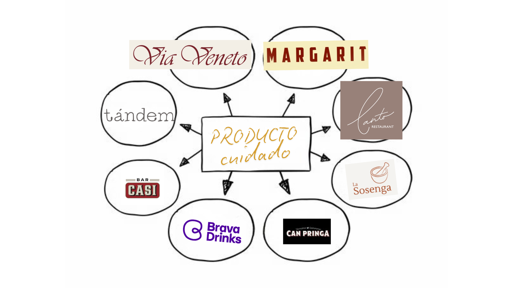
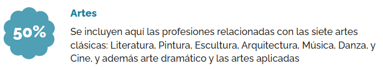

Tras trabajar durante años en el sector del software, me di cuenta que quería tener una profesión que crease un impacto tangible e inmediato en el mundo. Es por eso que me decanto por una profesión dentro del sector que conocemos como "oficios" donde predomina lo manual, con cercanía al cliente y pudiendo adaptarse a las necesidades de cada uno. Sin saber todavía dónde quiero acabar, tengo claro que quiero que esté relacionado con la gastronomía y la cultura.
Descripción
Cocinero/a experimentado/a para formar parte de nuestro equipo en un prestigioso restaurante ubicado en el centro de la ciudad.
Condiciones
- Entorno de trabajo dinámico y desafiante en un restaurante de alta calidad.
- Mínimo 3 años de experiencia.
- 2000 a 2500€ brutos al mes + propinas.
Competencias
- Excelentes habilidades de cocina y dominio de las técnicas culinarias, especialmente en la cocina mediterránea y española.
- Experiencia previa en puestos similares dentro de la industria de la restauración.
- Conocimientos sólidos sobre gestión de stocks de hostelería y análisis de peligros y puntos críticos de control (APPCC).
Información de interés
- Un paquete de remuneración competitivo y beneficios sociales.


Del Test de Orientación se desprende la idea de creatividad y gusto por la cultura. No sólo cultura como arte sino gastronomía, tradición e historia de las diferentes regiones.